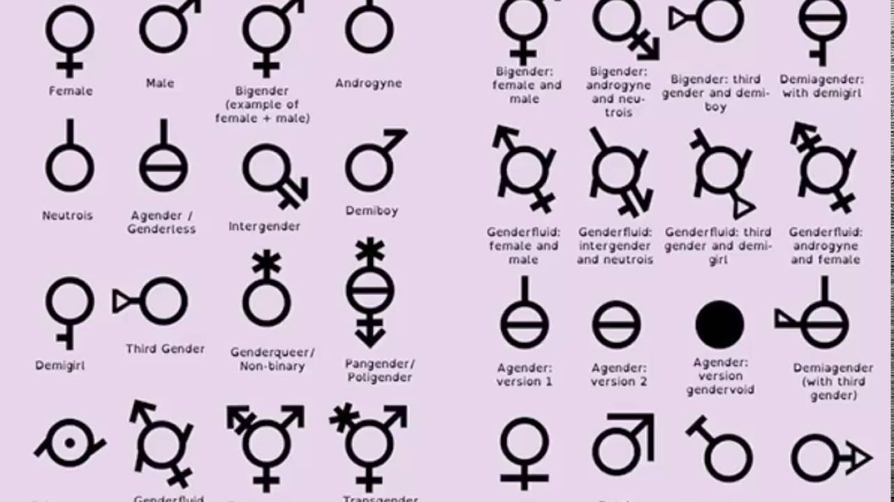

 There are 58 genders that can be identified. Very recently, Social Justice Warriors, otherwise known as SJWs, have been advocating the identification of genders other than male and female. The issue that is present is that a large portion of the world do not acknowledge this change, nor have they acknowledged the possibility of these other genders. This topic is considered no great matter. In essence, to the vast majority of people, this topic is not relevant to them as they only encounter two, males and females. What may seem as no great matter to one, may actually be very important to others. To those who identify as any gender other than male and female, and to SJWs, this topic is important as individual expression and pride are top priority. Prufrock was relating the image of his head on a platter as no great matter to him. However, to the reader, having their head severed on a platter is of great matter, and is scary to think about. In The Yellow Wall-Paper, John treats Jane's mental condition as no great matter. John, being a physician at the time, believes her condition is nothing but temporary nervous depression. Being the husband of Jane, what he believed was true was usually what was treated as true. Thus, Jane was mistreated. Her mental condition being regarded as no great matter was the issue at that time, when Hysteria was a serious condition constantly being undermined as it most often occured in women. With a lack of ability to express their states, something that was assumed as no great matter was actually of great importance to the women at the time.
This illumination of the text is provided by David Zhou! Right now, you are currently at "no great matter". Click to return to the excerpt.